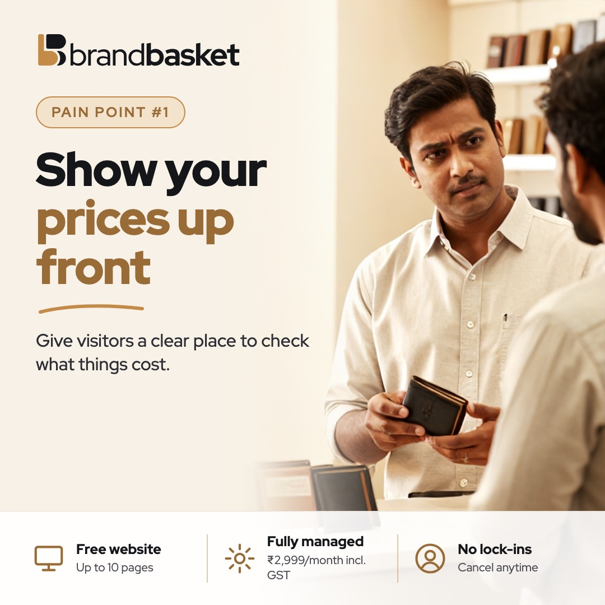
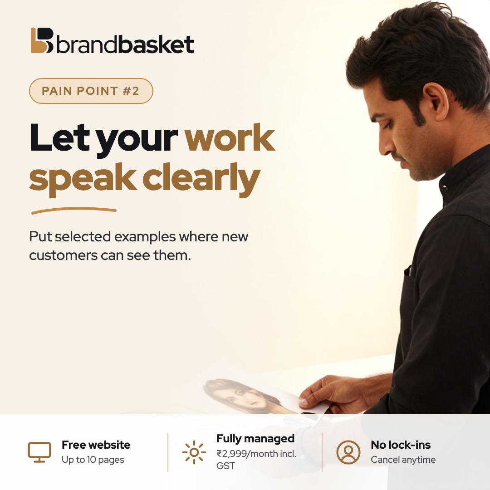
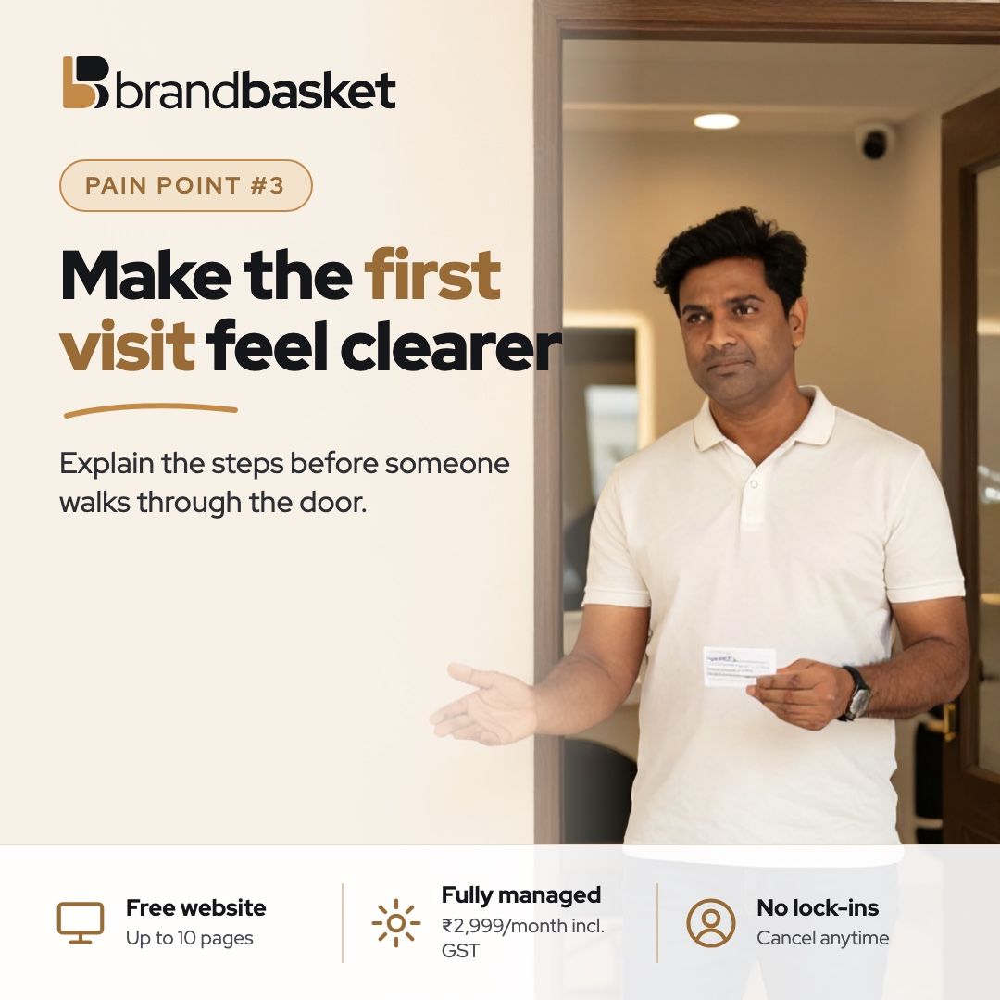
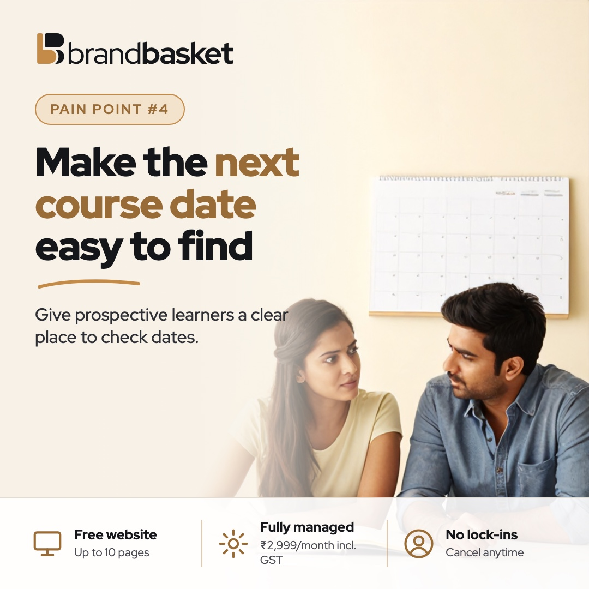
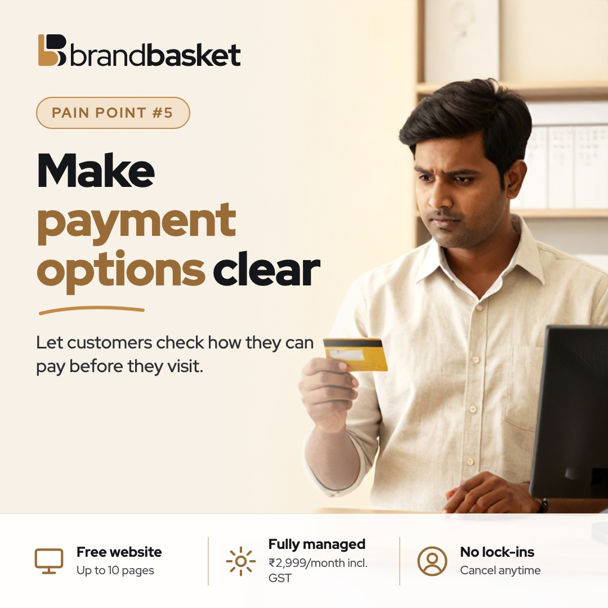
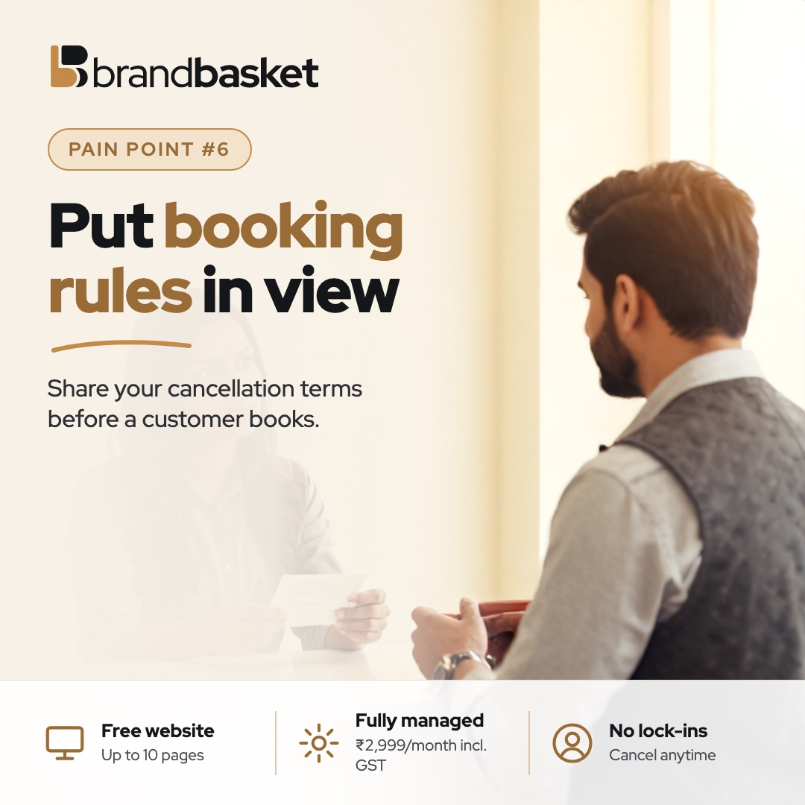
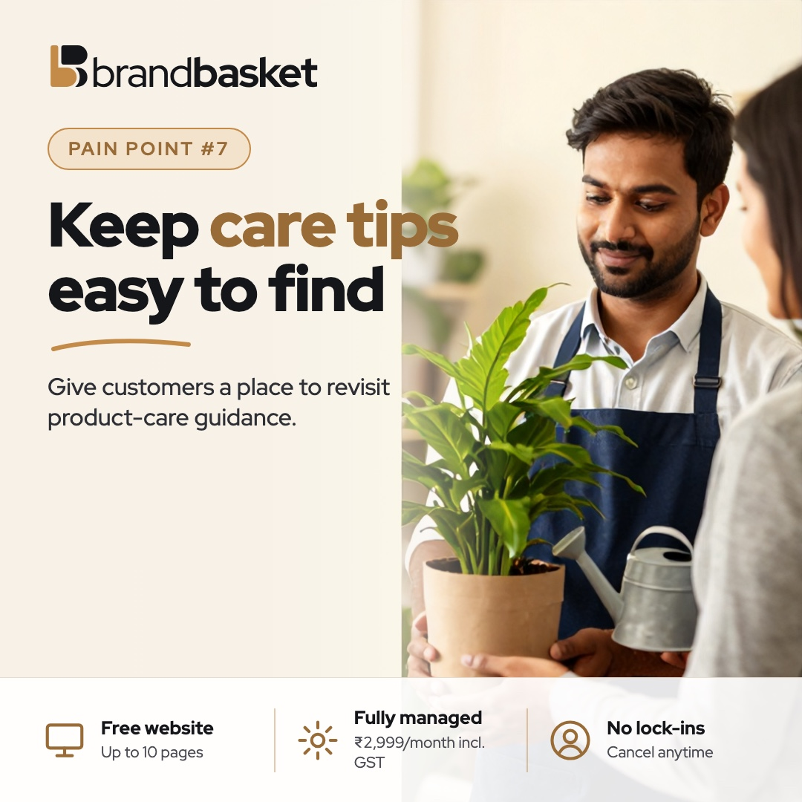

w03-d1 · 2026-12-05T10:00:00+05:30
Customers may hesitate to visit when they cannot check the business’s prices beforehand.
“How much will it cost?” is often the first question on a customer’s mind.
When prices or starting rates are hard to find, people may put off a visit or call just to ask. A website gives you a place to share the prices you choose to publish, so visitors can check before they come in.
Brandbasket builds a professional website for ₹0, with up to 10 pages, and gets it live in 7 working days. Hosting, SSL, backups, security updates and uptime monitoring are covered for ₹2,999 a month incl. GST.
Start your free website at brandbasket.in (link in bio).
#SmallBusinessIndia #LocalBusinessIndia #PriceTransparency #BusinessWebsite #IndiaBusiness #Brandbasket

w03-d2 · 2026-12-06T10:00:00+05:30
Potential customers cannot judge whether a business’s style suits them without seeing examples of its work.
“Can I see what your work looks like?”
For a salon, decorator, trainer or other hands-on business, it can be difficult for a new customer to picture the work from a name alone. If you have examples you are comfortable sharing, a website can give them a clear place to see them before they decide to get in touch.
Brandbasket builds professional websites for local businesses in India, with up to 10 pages at ₹0 to build. Your website can be live in 7 working days, then hosted and maintained for ₹2,999 a month incl. GST.
Start your free website at brandbasket.in (link in bio).
#LocalBusinessIndia #SmallBusinessIndia #SalonIndia #ShowYourWork #BusinessWebsite #Brandbasket

w03-d3 · 2026-12-07T10:00:00+05:30
A first-time visitor may feel unsure about what will happen during their first appointment.
“What happens when I get there?”
For someone visiting for the first time, not knowing whether to check in, wait, or bring anything can feel awkward. A short explanation of your usual visit process can help people understand what to expect before they arrive.
Brandbasket can build a professional website with up to 10 pages, live in 7 working days. The build is ₹0. Hosting, SSL, backups, security updates and uptime monitoring are included for ₹2,999 a month incl. GST.
Start your free website at brandbasket.in (link in bio).
#FirstVisit #LocalBusinessIndia #SalonIndia #CustomerExperience #BusinessWebsite #Brandbasket

w03-d4 · 2026-12-08T10:00:00+05:30
People interested in a coaching institute may not know when its next course intake begins.
“When does the next batch start?”
If someone is considering a course, not knowing the next intake date can make it harder to plan. A website gives your institute a place to publish the dates you have confirmed, so prospective learners can check them when they are comparing their options.
Brandbasket builds professional websites for local businesses in India for ₹0, with up to 10 pages. The site can be live in 7 working days. Hosting, SSL, backups, security updates and uptime monitoring are ₹2,999 a month incl. GST.
Start your free website at brandbasket.in (link in bio).
#CoachingInstitute #EducationIndia #LocalBusinessIndia #CourseDates #BusinessWebsite #Brandbasket

w03-d5 · 2026-12-09T10:00:00+05:30
Customers may arrive without knowing which payment methods a business accepts.
“Can I pay by card?”
When customers do not know which payment methods you accept, they may arrive unprepared or need to ask at the counter. If you choose to share that information, a website can make it easy to check before a visit.
Brandbasket builds a professional website for ₹0, with up to 10 pages, and gets it live in 7 working days. Hosting, SSL, backups, security updates and uptime monitoring are covered for ₹2,999 a month incl. GST.
Start your free website at brandbasket.in (link in bio).
#SmallShopIndia #LocalBusinessIndia #PaymentOptions #SmallBusinessIndia #BusinessWebsite #Brandbasket

w03-d6 · 2026-12-10T10:00:00+05:30
Customers may be surprised by a cancellation or rescheduling policy they only learn about after booking.
“I didn’t know I had to cancel in advance.”
When customers only find out about cancellation or rescheduling terms after they have booked, it can lead to an uncomfortable conversation. If your business has a policy, putting it on your website gives people a chance to read it beforehand.
Brandbasket builds professional websites for local businesses in India, with up to 10 pages at ₹0 to build. Your site can be live in 7 working days, with hosting, SSL, backups, security updates and uptime monitoring for ₹2,999 a month incl. GST.
Start your free website at brandbasket.in (link in bio).
#AppointmentBusiness #LocalBusinessIndia #SalonIndia #CustomerClarity #BusinessWebsite #Brandbasket

w03-d7 · 2026-12-11T10:00:00+05:30
Customers may forget how to care for a product after buying it from a neighbourhood shop.
“How often should I water this?”
A customer may remember the product they bought but forget the care instructions once they get home. If you have simple guidance to share, a website can keep it in one place for customers to revisit.
Brandbasket builds professional websites for local businesses in India for ₹0, with up to 10 pages. The site can be live in 7 working days, then hosted and maintained for ₹2,999 a month incl. GST. That includes two edits a month, up to 15 minutes each.
Start your free website at brandbasket.in (link in bio).
#NeighbourhoodShop #SmallBusinessIndia #PlantShop #ProductCare #BusinessWebsite #Brandbasket